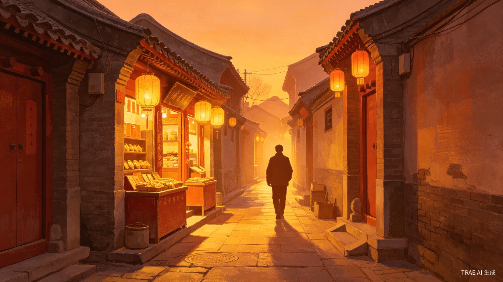
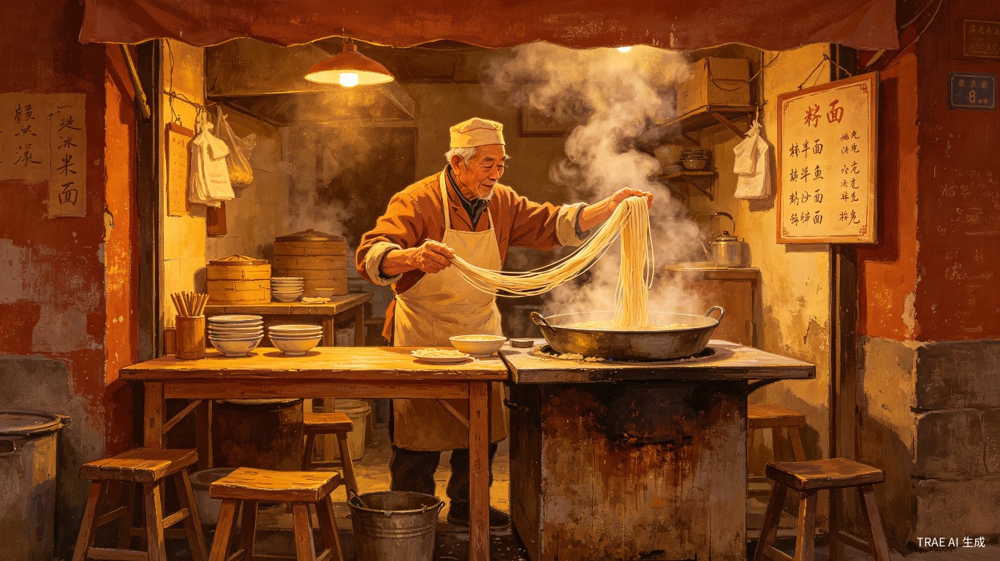
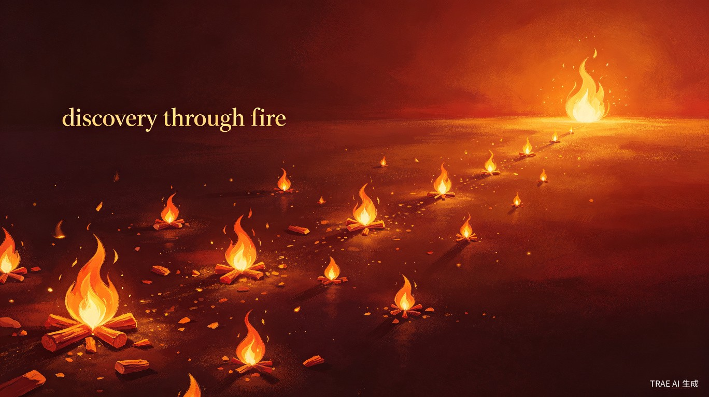

"不做平台没客人，
做了平台没利润。"
做了三十年面的老师傅，手一摸就知道面醒没醒好。
但他搞不懂那些App——收两成佣金，还要花钱买曝光。
一碗面才卖十五块。

让好店被看见，让手艺人被找到。
一个去中心化的本地生活入口。
Contents · 目录
面馆老师傅的一句话，点燃了这个想法。
用户找不到好店，商家被平台抽干，骑手困在算法里。
去中心化的本地生活入口，数据归自己，排名靠真实。
不抽佣、不卖排名，靠工具和服务费活下去。
让价值回到创造者手里，让每一次推荐都是一把火。
Chapter · 01
一个面馆老师傅的话，点燃了这个想法。

做了三十年面的老师傅，手一摸就知道面醒没醒好。
但他搞不懂那些App——收两成佣金，还要花钱买曝光。
一碗面才卖十五块。
Chapter · 02
三方都吃的平台——吃用户、吃商家、吃骑手。
Pain Points · 三方困境
排在最前面的永远是花钱最多的人。不知道哪些是真评价、哪些是假种草。真正的老店可能排在第五十名，你根本翻不到。
手艺好的被平台抽佣榨干；有钱投流的不管好不好都排前面。不花钱没客人，花了钱没利润。
被困在算法里，用生命跑单，得到的却越来越少。每一单的配送费都在被压缩。
Comparison · 对比
Chapter · 03
一个去中心化的本地生活入口，从根上就不一样。

不是谁花钱谁靠前。是每一个真实的人，去过、觉得好、点了一下，
这家店就亮了一点。好店自己会浮上来，不需要花钱买位置。
Features · 产品特性
商家用自己的工具管理经营，数据在商家手里。用户的会员卡、消费记录，在用户自己手里。平台只是一个入口。
不卖排名，不买流量。每一个真实的人去过、觉得好、点一下，这家店就亮了一点。好店是被火点出来的。
基础经营工具一次性付费，拿到手就是自己的。需要更多营销能力再按需付费，价格便宜到小店也用得起。
Chapter · 04
不靠抽成活着。赚的是帮商家被更多人看见的服务费。
Business Model · 如何活下去
商家的基础经营工具免费使用，降低准入门槛，让每一家小店都能上手。
需要更多管理能力的商家，一次性付费拿到手，数据永远归自己。
让更多人看见、让店面更醒目——按需付费，价格便宜到街边小店也用得起。
不是因为被迫才付钱，而是因为真的有用。赚的不是卖流量的钱，是帮商家被看见的服务费。
Platform · 为什么选择鸿蒙
鸿蒙的分布式架构让数据可以留在设备端，而不是全部收拢到一个中心服务器。这与我们"数据归自己"的理念完美契合。
鸿蒙的服务发现能力让商家和用户之间的连接更自然，不需要通过一个中心化的中转站。
手机、平板、手表、车机——一个入口连接所有场景，让"发现好店"这件事随时随地发生。
Chapter · 05
让价值回到创造者手里。
Value · 三层价值
商家自己管理经营数据，用户的会员卡和消费记录归用户自己。平台不碰数据，不抽佣金，不卖排名。
平台赚的不是卖流量的钱，是帮商家被更多人看见的服务费。商家不是因为被迫才付钱，而是因为真的有用。
做饭的人、理发的人、修东西的人——他们应该得到每一分应得的收入。让手艺人被看见，让探索者发现好店。
他只需要把面做好。
剩下的——让更多人知道他、找到他、记住他——
应该有人帮他做这件事。
— 咊咊寻焱的初心
Vision · 愿景
连接所有好店，也连接人与人之间最简单的信任。
每一次用户觉得一家店不错，点一下，就帮这家店亮了一点。
三十年面馆的老师傅，二十年理发的大姐，四十年修鞋的大叔——他们值得被更多人知道。
走在一条没去过的街上，打开App就知道附近有什么值得进的店。
不需要刷评分、翻评论、担心被种草。好店自己会浮上来。
好店是被一把火一把火点出来的。
愿每一份手艺，都不被辜负。